Eye Diagram and Scatter Plot
This demonstration shows how to use the COMMSCOPE.EYEDIAGRAM object and SCATTERPLOT function in analyzing communication systems.
Contents
Using the EYEDIAGRAM Object
Plotting a modulated, filtered signal using PLOT does not display the characteristics of a modulation as clearly as an eye diagram and scatter plot. The eye diagram overlays many short segments, called traces, to reveal signal characteristics. The scatter plot samples the signal at the symbol time and displays it in signal space. We choose simulation parameters to provide a high resolution for the analysis.
% Initialize system parameters Fs = 10000; Rs = 100; nSamps = Fs/Rs; rollOff = 0.5; hMod = modem.pskmod(4, pi/4); % QPSK modulator object % Square root raised cosine filters filtSpec = fdesign.pulseshaping(nSamps,'Square root raised cosine',... 'Nsym,Beta',6,rollOff); hTxFlt = design(filtSpec); hTxFlt.PersistentMemory = true; hRxFlt = copy(hTxFlt); hTxFlt.Numerator = hTxFlt.Numerator*nSamps; % Generate modulated and pulse shaped signal frameLen = 1000; msgData = randi([0 hMod.M-1],frameLen,1); msgSymbols = modulate(hMod, msgData); msgTx = hTxFlt.filter(upsample(msgSymbols, nSamps)); t = 0:1/Fs:50/Rs-1/Fs; idx = round(t*Fs+1); hFig = figure; plot(t, real(msgTx(idx))); title('Modulated, filtered in-phase signal'); xlabel('Time (sec)'); ylabel('Amplitude'); grid on; % Manage the figures managescattereyefig(hFig);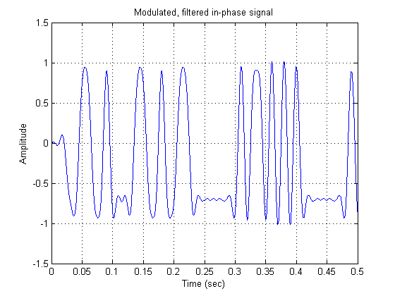
The eye diagram object is used to plot multiple traces of a modulated, pulse shaped signal to analyze system characteristics. In the following figure, we plot a 2D color eye diagram, where the color intensity is proportional to the probability density function (PDF) of the input signal's amplitude at a given time. We will investigate this PDF more closely in section The Eye Diagram Data. The upper plot is for the in-phase component of the analyzed signal, and the lower plot for the quadrature component. Since the default value of the SymbolsPerTrace property is two, the eye diagram spans two symbols. In the following example, we analyze the transmitted signal. The intersymbol interference (ISI) introduced by the square-root, raised-cosine, pulse shaping filter can be clearly seen.
% Create an eye diagram object eyeObj = commscope.eyediagram(... 'SamplingFrequency', Fs, ... 'SamplesPerSymbol', nSamps, ... 'OperationMode', 'Complex Signal') % Update the eye diagram object with the transmitted signal eyeObj.update(0.5*msgTx); % Manage the figures managescattereyefig(hFig, eyeObj, 'right');
eyeObj =
Type: 'Eye Diagram'
SamplingFrequency: 10000
SamplesPerSymbol: 100
SymbolRate: 100
SymbolsPerTrace: 2
MinimumAmplitude: -1
MaximumAmplitude: 1
AmplitudeResolution: 0.0100
MeasurementDelay: 0
OperationMode: 'Complex Signal'
PlotType: '2D Color'
PlotTimeOffset: 0
RefreshPlot: 'on'
PlotPDFRange: [0 1]
ColorScale: 'linear'
SamplesProcessed: 0
Measurements: [1x1 commscope.eyemeasurements]
MeasurementSetup: [1x1 commscope.eyemeasurementsetup]
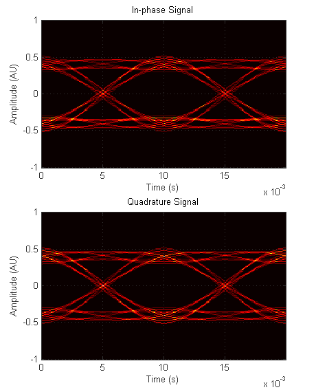 Now we will examine the received signal. We assume that the received signal is corrupted by AWGN with symbol energy to noise power spectral density ratio (Es/No) of 20 dB and the receiver employs a matched filter. Therefore, the combined filter seen by the receiver is an approximate raised cosine filter with minimal ISI. One problem that we observe with this eye diagram is that the signal exceeds the amplitude limits of the object. As can be seen from the command line warning, the eye diagram object ignores out-of-range values.
EsNo = 20; SNR = EsNo - 10*log10(nSamps); msgRx = awgn(msgTx, SNR, 'measured', [], 'dB'); msgRxMf = hRxFlt.filter(msgRx); % Discard the existing eye diagram data eyeObj.reset; % Update the eye diagram object with the received signal eyeObj.update(msgRxMf); figure(hFig); plot(t, real(msgRxMf(idx))); title(['Modulated, filtered noisy in-phase signal, Es/No = ' ... num2str(EsNo) ' dB']); xlabel('Time (sec)'); ylabel('Amplitude'); grid on; % Manage the figures managescattereyefig(hFig, eyeObj, 'right');
Warning: The input signal exceeded the amplitude limits. Out-of-range signal values are ignored. Adjust amplitude limits.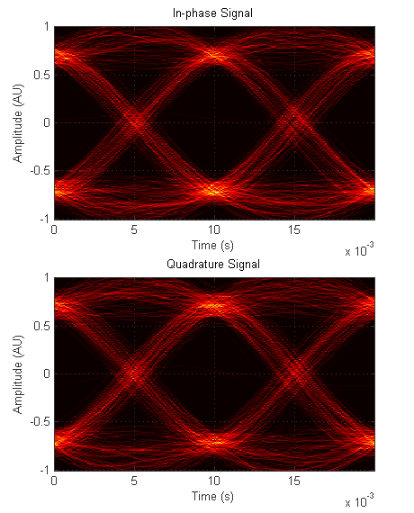 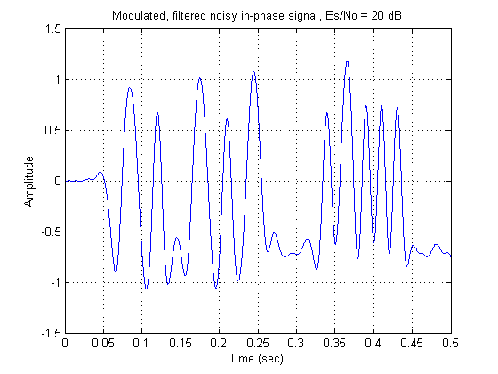
We can adjust the amplitude limits to include the whole signal in the analysis. Since changing the amplitude limits resets the eye diagram object, we need to update the eye diagram with the same inputs again. With the new amplitude limits, we avoid the out-of-range warning.
eyeObj.MinimumAmplitude = -1.5; eyeObj.MaximumAmplitude = 1.5; eyeObj.update(msgRxMf);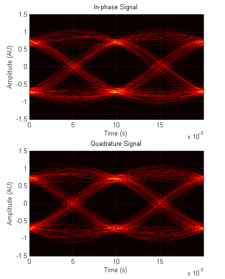
We can change the color scale to logarithmic to get a better view of small PDF values in the eye diagram. The lines that pass through the eye opening around the zero level are more visible in this view. These lines are due to the initial transients of the input signal.
eyeObj.ColorScale = 'log';
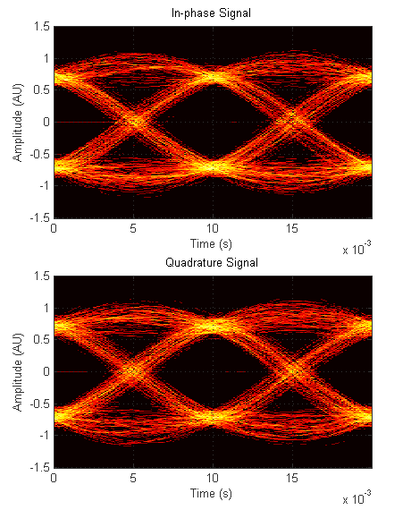 We can exclude these transients from the eye diagram analysis by setting a measurement delay such that all the transients will die out within this period. Since the total delay of the transmit and the receive filters is six symbols, we set the measurement delay to 6/Rs seconds. Modifying the MeasurementDelay property resets the eye diagram object and clears the figure.
eyeObj.MeasurementDelay = 6/Rs; close(hFig);

The accuracy of the eye diagram analysis increases as the number of symbols passed through the eye diagram object increases. In the following example, we run the eye diagram object in a loop and collect 2000 symbols worth of data. We observe that the widest amplitude opening of the eye occurs around 10 msec. This corresponds to the best sampling time.
eyeObj.ColorScale = 'linear'; frameLen = 50; nFrames = 40; for p=1:nFrames msgData = randi([0 hMod.M-1],frameLen,1); msgSymbols = modulate(hMod, msgData); msgTx = hTxFlt.filter(upsample(msgSymbols, nSamps)); msgRx = awgn(msgTx, SNR, 'measured', [], 'dB'); msgRxMf = hRxFlt.filter(msgRx); eyeObj.update(msgRxMf); end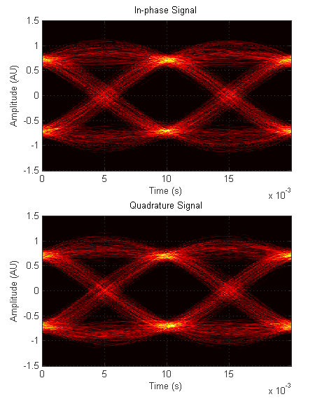
We can mask a range of PDF values to get more insight about the signal characteristics. PlotPDFRange, which masks the PDF points that are out of the specified range, can be used for this purpose. In the following example, the eye diagram shows regions that have a PDF value greater then 1e-2 and less than 1.
eyeObj.PlotPDFRange = [1e-2 1];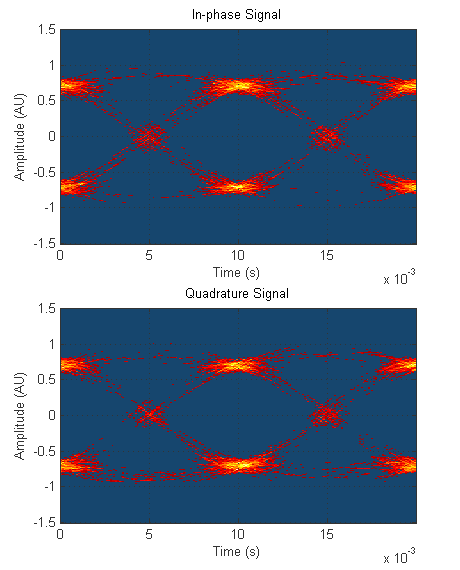
We can adjust the time offset of the eye diagram to move the open part of the eye along the time axis. We apply a time offset of 5 msec to the eye diagram for the following figure. The time offset is only for plotting purposes and does not affect the collected data.
eyeObj.PlotPDFRange = [0 1]; pause(0.5) eyeObj.PlotTimeOffset = 5e-3;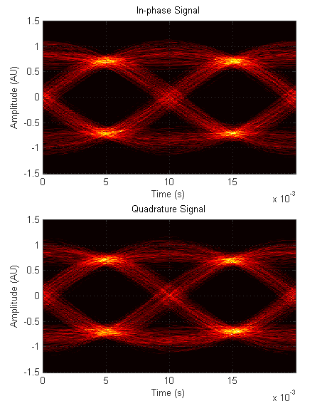
We can also specify a different color map for the eye diagram through the PLOT method. In the following example, we use the 'jet' color map provided with MATLAB®. We can also use any custom color map. To get more information on color maps, see help colormap.
eyeObj.PlotTimeOffset = 0; pause(0.5) plot(eyeObj, jet(64));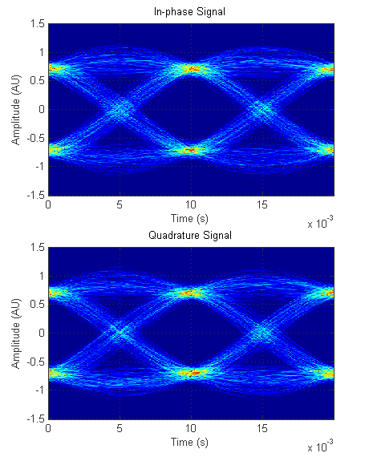
We can adjust the background color of the eye diagram through the color map property of the figure. Since the background color is also the color that corresponds to zero PDF, we can use the first element of the color map as the background color. In the following, we set the background color to black.
cmap = jet(64); cmap(1,:) = [0 0 0]; plot(eyeObj, cmap);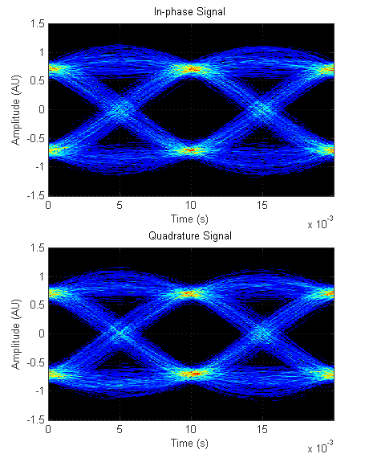
We can also view the eye diagram in 3D. You can rotate the eye diagram using the 'Rotate 3D' option under the Tools menu.
eyeObj.PlotType = '3D Color';
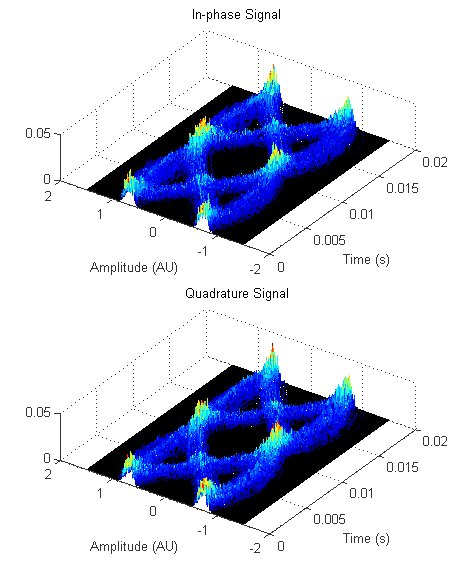 The eye diagram object can also plot the received signal using individual traces instead of PDF values. The NumberOfStoredTraces property of the eye diagram object determines the number of traces stored by the object. These stored traces are used to plot the 2D-line eye diagram. Since we store only ten traces, the eye diagram is not complete.
eyeObj.PlotType = '2D Line'
eyeObj =
Type: 'Eye Diagram'
SamplingFrequency: 10000
SamplesPerSymbol: 100
SymbolRate: 100
SymbolsPerTrace: 2
MinimumAmplitude: -1.5000
MaximumAmplitude: 1.5000
AmplitudeResolution: 0.0100
MeasurementDelay: 0.0600
OperationMode: 'Complex Signal'
PlotType: '2D Line'
NumberOfStoredTraces: 10
PlotTimeOffset: 0
RefreshPlot: 'on'
SamplesProcessed: 170000
Measurements: [1x1 commscope.eyemeasurements]
MeasurementSetup: [1x1 commscope.eyemeasurementsetup]
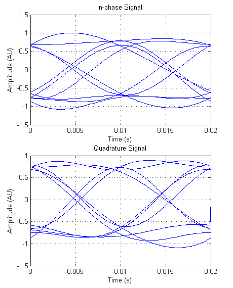 We can increase NumberOfStoredTraces to get a better 2D-line eye diagram. The eye diagram object stores either NumberOfStoredTraces traces or the input length, whichever is smaller. In this example, a trace is two symbols long (see the SymbolsPerTrace property), so we also need to increase the input length. The memory used by the eye diagram object increases with increasing NumberOfStoredTraces. Setting NumberOfStoredTraces to zero minimizes the memory usage and also speeds up the UPDATE method.
eyeObj.NumberOfStoredTraces = 100; frameLength = 200; msgData = randi([0 hMod.M-1],frameLen,1); msgSymbols = modulate(hMod, msgData); msgTx = hTxFlt.filter(upsample(msgSymbols, nSamps)); msgRx = awgn(msgTx, SNR, 'measured', [], 'dB'); msgRxMf = hRxFlt.filter(msgRx); eyeObj.update(msgRxMf); eyeObj.PlotTimeOffset = 0;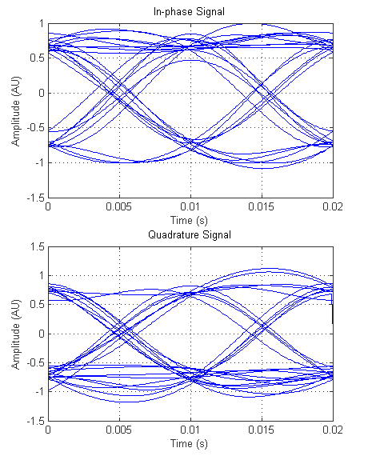
The Eye Diagram Data
Eye diagrams are most useful when they provide the PDF of the input signal's amplitude. We can export the eye diagram data to closely examine this PDF and the signal characteristics. The EYEC matrix below is called the vertical histogram matrix of the eye diagram. Each column of EYEC represents the amplitude PDF of the input signal at the corresponding time. We plot the vertical histogram at 10 msec, which is the best sampling time. We can clearly see the amplitude distribution around -0.7 and +0.7 for both in-phase and quadrature signal components, which correspond to four constellation points of the QPSK modulation. We also plot 2D-line and 2D-color eye diagrams on the same figure using the subplot function.
% Close figures close(eyeObj); % Export eye diagram data [eyec eyel] = exportdata(eyeObj); %Normalize to obtain PDF eyec = eyec / (sum(real(eyec(:,1)))); ampMin = eyeObj.MinimumAmplitude; ampMax = eyeObj.MaximumAmplitude; ampDelta = eyeObj.AmplitudeResolution; amp = ampMin:ampDelta:ampMax; idx = 10e-3*eyeObj.SamplingFrequency; hFig = figure; subplot(211); plot(amp, real(eyec(:, idx))); grid on; title('Vertical histogram of in-phase signal at t = 10 msec'); xlabel('Amplitude'); ylabel('PDF'); grid on; subplot(212); plot(amp, imag(eyec(:, idx))); grid on; title('Vertical histogram of quadrature signal at t = 10 msec'); xlabel('Amplitude'); ylabel('PDF'); grid on; hFig(2) = figure; nSymbols = eyeObj.SymbolsPerTrace; Fs = eyeObj.SamplingFrequency; nSamps = eyeObj.SamplesPerSymbol; t = (0:1:nSymbols*nSamps)/Fs; subplot(221); plot(t, real(eyel), 'b'); title('In-phase Eye - Line'); subplot(223); plot(t, imag(eyel), 'b'); title('Quadrature Eye - Line'); subplot(222); imagesc(t(1:end-1), amp, real(eyec)); title('In-phase Eye - 2D Color'); subplot(224); imagesc(t(1:end-1), amp, imag(eyec)); title('Quadrature Eye - 2D Color'); % Manage the figures managescattereyefig(hFig, [], 'right');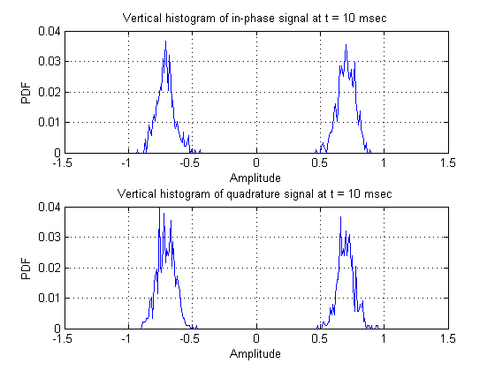 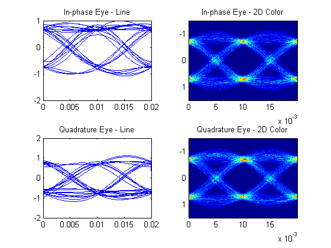
Using the SCATTERPLOT Function
SCATTERPLOT generates a scatter plot, which is a plot of the in-phase component of the signal versus the quadrature component, decimated by a factor that is usually set to the number of samples per symbol, NSAMPS. The resulting plot shows the matched filtered signal sampled at the symbol rate. Since the combined transmit and receive filters is only an approximation to the ideal raised-cosine filter, the received samples are not exactly the same as the transmitted symbols.
% Close figures close(hFig(ishghandle(hFig))); % Pass the noiseless transmitted signal through a matched filter msgRx = hRxFlt.filter(msgTx); % Create the scatter plot delay = eyeObj.MeasurementDelay*Fs; msgRxD = msgRx(delay+1:end); h1 = scatterplot(msgRxD, nSamps); % Manage the figures managescattereyefig(h1);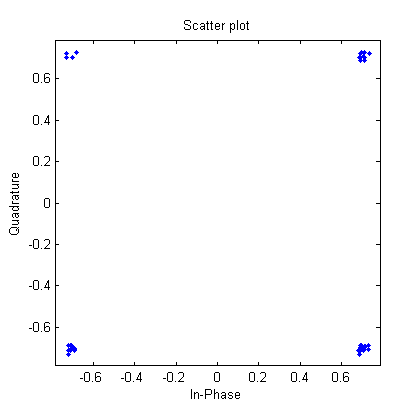
SCATTERPLOT is executed twice to generate this plot. The cyan line represents the in-phase component of the received signal trajectory versus the quadrature component, in signal space. The blue dots represent the signal at the symbol sampling times. This plot demonstrates that, even though the signal moves about in signal space, its value approaches the value of the original signal when sampled at the symbol boundaries.
% Create the scatter plot h2 = scatterplot(msgRxD, 1, 0, 'c-'); hold on; scatterplot(msgRxD, nSamps, 0, 'b.',h2); hold off; % Manage the figures close(h1(ishghandle(h1))); managescattereyefig(h2);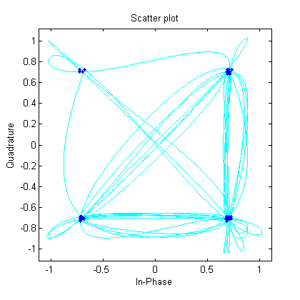
Analyzing Communication Systems Using Eye Diagram and Scatter Plot
The following code plots the signal that is passed through an AWGN channel and matched filtered at the receiver (red line). Even though the noisy signal can be differentiated from the noiseless matched filtered signal (blue line), it is still difficult to determine the effect the noise has on the signal. Es/No for the noisy signal is 10 dB, which corresponds to a signal-to-noise ratio (SNR) of -10 dB.
% Close the figure close(h2(ishghandle(h2))); % Create the plot EsNo = 10; SNR = EsNo - 10*log10(nSamps); frameLen = 1000; msgData = randi([0 hMod.M-1],frameLen,1); msgSymbols = modulate(hMod, msgData); msgTx = hTxFlt.filter(upsample(msgSymbols, nSamps)); msgRxMfP = hRxFlt.filter(msgTx); msgRx = awgn(msgTx, SNR, 'measured', [], 'dB'); msgRxMf = hRxFlt.filter(msgRx); t = eyeObj.MeasurementDelay:1/Fs:40/Rs-1/Fs; idx = round(t*Fs+1); hFig = figure; plot(t,real(msgRxMfP(idx)),'b-',t,real(msgRxMf(idx)),'r-'); title('Modulated, filtered in-phase signal and noisy signal'); xlabel('Time (sec)'); ylabel('Amplitude'); grid on; legend('Modulated, filtered signal', ... ['Noisy signal, Es/No=' num2str(EsNo) ' dB'], ... 'Location', 'SouthWest'); % Manage the figures close(eyeObj); managescattereyefig(hFig);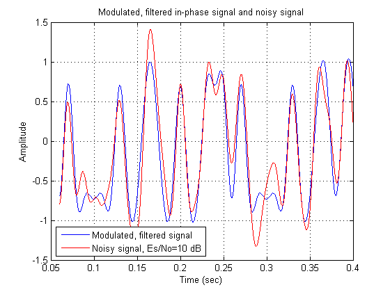
The following figures are eye diagrams of the matched filtered noiseless received signal (blue lines) and the noisy signal (red lines). The eye diagrams clearly demonstrate the variation in the received signal from the transmitted signal due to the AWGN channel and the receive filter. Note that we can control the line specifications by calling the overloaded PLOT method of the eye diagram object with a LINESPEC identifier. To get more information on LINESPEC identifiers see help plot.
% Create the eye diagrams eyeObj.MinimumAmplitude = -2; eyeObj.MaximumAmplitude = 2; eyeObj.MeasurementDelay = 5/Rs; eyeObj.update(msgRxMfP); % Make an independent copy of the eye diagram object eyeObjN = copy(eyeObj); reset(eyeObjN); eyeObjN.RefreshPlot = 'off'; eyeObjN.update(msgRxMf); plot(eyeObjN, 'r') % Manage the figures close(hFig(ishghandle(hFig))); managescattereyefig([], [eyeObj eyeObjN], 'right');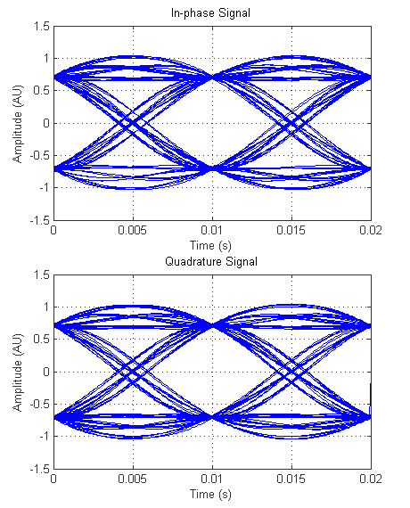 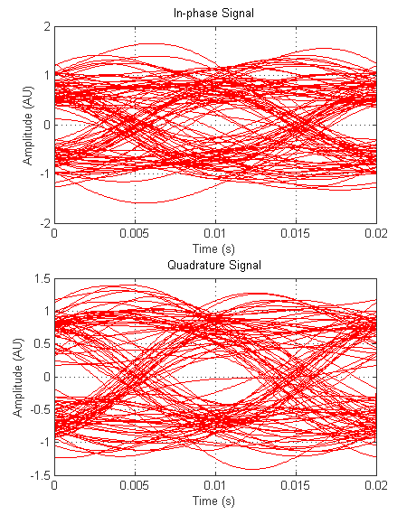
The following figures are scatter plots of the matched filtered noiseless received signal (blue dots) and the noisy signal (red dots). They clearly demonstrate the variation from the transmitted signal in the received signal at the symbol boundaries.
% Create the scatter plots delay = eyeObj.MeasurementDelay * Fs; h(1) = scatterplot(msgRxMfP(delay+1:end), nSamps, 0, 'b.'); h(2) = scatterplot(msgRxMf(delay+1:end), nSamps, 0, 'r.'); % Manage the figures managescattereyefig(h, [eyeObj eyeObjN], 'down');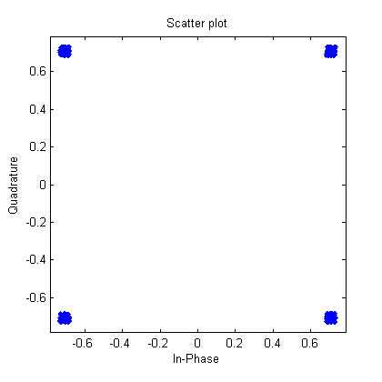
The following is a plot of the same transmitted signal received at an Es/No of 20 dB (magenta line). The variations caused by noise are smaller than with the previous signal (Es/No = 10 dB). In this case the eye diagrams and scatter plots are needed even more to determine the system characteristics.
% Close all open figures close(h(ishghandle(h)));close(eyeObj);close(eyeObjN); % Plot the transmitted signal EsNo2 = 20; SNR2 = EsNo2 - 10*log10(nSamps); msgRx2 = awgn(msgTx, SNR2, 'measured', [], 'dB'); msgRxMf2 = hRxFlt.filter(msgRx2); hFig = figure; plot(t, real(msgRxMfP(idx)),'b-', t, real(msgRxMf2(idx)), 'm-'); title('Modulated, filtered signal and noisy signal'); xlabel('Time (sec)'); ylabel('Amplitude'); grid on; legend('Modulated, filtered signal', ... ['Noisy signal, Es/No=' num2str(EsNo2) ' dB'], ... 'Location', 'SouthWest'); % Manage the figures managescattereyefig(hFig);

The following figures are eye diagrams of the first noisy signal (red lines) and the second noisy signal (magenta lines). They clearly demonstrate that the variation in the second received signal is less than the first received signal.
% Close figures close(hFig(ishghandle(hFig))); % Create the eye diagram plots eyeObjN2 = copy(eyeObj); eyeObjN2.RefreshPlot = 'off'; eyeObjN2.reset; eyeObjN2.update(msgRxMf2); plot(eyeObjN2, 'm'); plot(eyeObjN, 'r'); % Manage the figures managescattereyefig([], [eyeObjN eyeObjN2], 'right');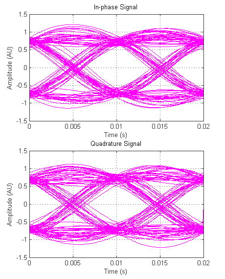
The following figures are scatter plots of the first noisy signal (red dots) and the second noisy signal (magenta dots). They clearly demonstrate that the variation from the second received signal is less than the first received signal at the sampling points.
% Create the scatter plots h(1) = scatterplot(msgRxMf, nSamps, 0, 'r.'); h(2) = scatterplot(msgRxMf2, nSamps, 0, 'm.'); % Manage the figures managescattereyefig(h, [eyeObjN eyeObjN2], 'down');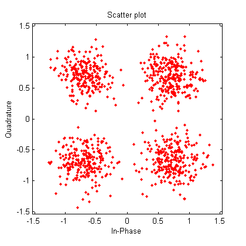 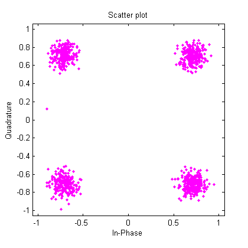
Visualizing the Impact of Timing Errors Using Eye Diagram and Scatter Plot
We can visualize the impact of timing errors using the eye diagram and the scatter plot. This animation of the eye diagram and scatter plot also demonstrates that they can be plotted with any offset. We use the second noisy matched filtered signal for this animation. The blue line in the eye diagram shows the sampling time. The red dots in the scatter plot show the samples at the best sampling time, while the blue stars show the samples with a sampling time offset.
% Close plots close(h(ishghandle(h))); close(eyeObj); close(eyeObjN); % Prepare eye diagram eyeObjN2.PlotType = '2D Color'; managescattereyefig([], eyeObjN2); % Create and animate the plots offsetValues = 0:1/Fs:1/Rs; h = animatescattereye(msgRxMf2(idx),nSamps,0,offsetValues,eyeObjN2);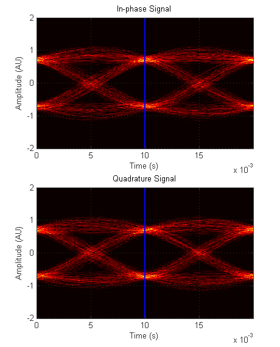 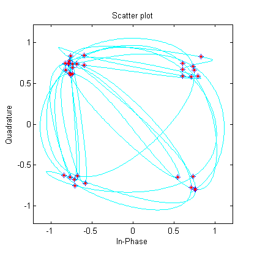